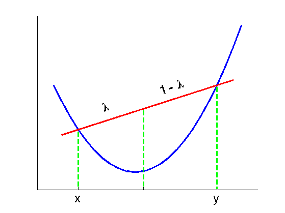
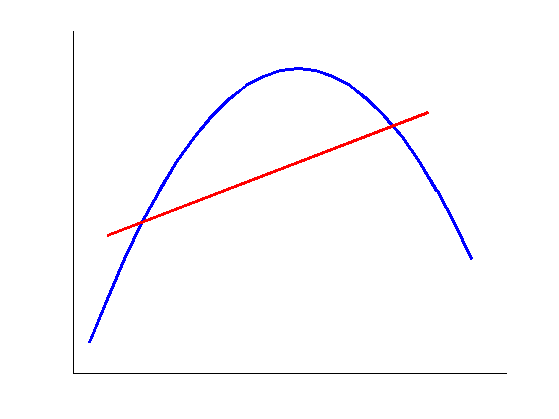
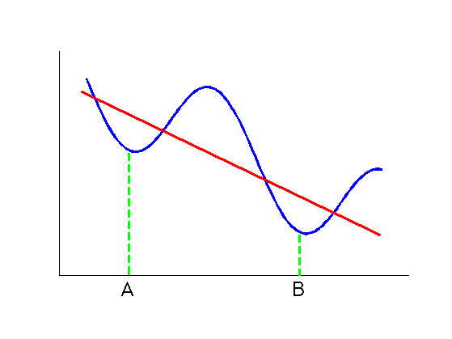

Contents
function convexFnHand
====================================================================
Figure 1 =====================================================================
x = (-10:1:13) + 10;
y = convexFn(x);
x0 = 3;
y0= convexFn(x0);
x1 = x0 + 8;
x2 = x0 + 17;
y2 = convexFn(x2);
ratio = (y2 - y0) / (x2 - x0);
y1 = (x1 - x0) * ratio + y0;
figure(1); clf; hold on;
% plot function
plot(x, y, '-b', 'LineWidth', 3);
% plot a tangent line
plot([x0-2,x2+2], [y0-2*ratio,y2+2*ratio], '-r', 'LineWidth', 3);
% plot other lines
plot([x0, x0], [y0, 1], '--g', 'LineWidth', 3);
plot([x1, x1], [y1, 1], '--g', 'LineWidth', 3);
plot([x2, x2], [y2, 1], '--g', 'LineWidth', 3);
text(x0+3, y0+25, '\lambda', 'FontSize', 24, 'FontWeight', 'bold', 'Rotation',acot(ratio) * 180 / pi);
text(x0+10, y0+45, '1 - \lambda', 'FontSize', 24, 'FontWeight', 'bold', 'Rotation', acot(ratio) * 180 / pi);
xlim([-2, 25]);
set(gca, 'YTick', []);
set(gca, 'XTick', [x0, x1, x2]);
set(gca, 'XTickLabel', {'x', '', 'y'}, 'FontSize', 24, 'FontWeight', 'bold');
hold off;
 ====================================================================
Figure 2 =====================================================================
x = (-12:1:10) + 13;
y = concaveFn(x);
x0 = 4;
y0 = concaveFn(x0);
x2 = 18.5;
y2 = concaveFn(x2);
ratio = (y2 - y0) / (x2 - x0);
figure(2); clf; hold on;
% plot function
plot(x, y, '-b', 'LineWidth', 3);
% plot a tangent line
plot([x0-2,x2+2], [y0-2*ratio,y2+2*ratio], '-r', 'LineWidth', 3);
set(gca, 'XTick', [], 'YTick', []);
ylim([-180, 0]);
hold off;
 ====================================================================
Figure 3 =====================================================================
x = 0.5*pi : 0.1 : 4 * pi;
y = periodicFn(x);
x0 = pi;
y0 = periodicFn(x0);
x2 = 3 * pi;
y2 = periodicFn(x2);
ratio = (y2 - y0) / (x2 - x0);
x1 = 1.4 * pi;
y1 = periodicFn(x1);
figure(3); clf; hold on;
plot(x, y, '-b', 'LineWidth', 3);
% plot a tangent line
plot([x1-3,x1+8], [y1-3*ratio,y1+8*ratio], '-r', 'LineWidth', 3);
plot([x0, x0], [y0, 0], '--g', 'LineWidth', 3);
plot([x2, x2], [y2, 0], '--g', 'LineWidth', 3);
set(gca, 'YTick', []);
set(gca, 'XTick', [x0, x2], 'XTickLabel', {'A', 'B'}, 'FontSize', 24, 'FontWeight', 'bold');
axis equal;
ylim([0, max(y)+1]);
xlim([min(x)-1, max(x)+1]);
hold off;
 end function y = convexFn(x) y = (x - 10).^2 + 20; end function y = concaveFn(x) y = - ((x - 13).^2 + 20); end function y = periodicFn(x) y = 0.6 * (pi*cos(x) - 0.8*x) + 8; end